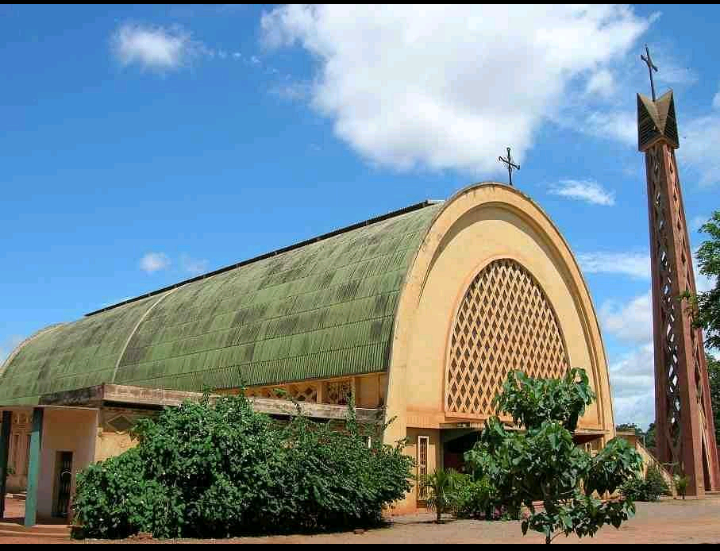

Description et historique du site :
Situé entre la gare ferroviaire et le marché central de Bobo-Dioulasso,la Cathédrale Notre-Dame de Lourdes est un édifice religieux qui a été ouvertaux cultes dans les années 1961.Elles est classée parmi les patrimoines touristiques du Burkina Faso.c'est une très belle Cathédrale qui doit absolument être visitée.